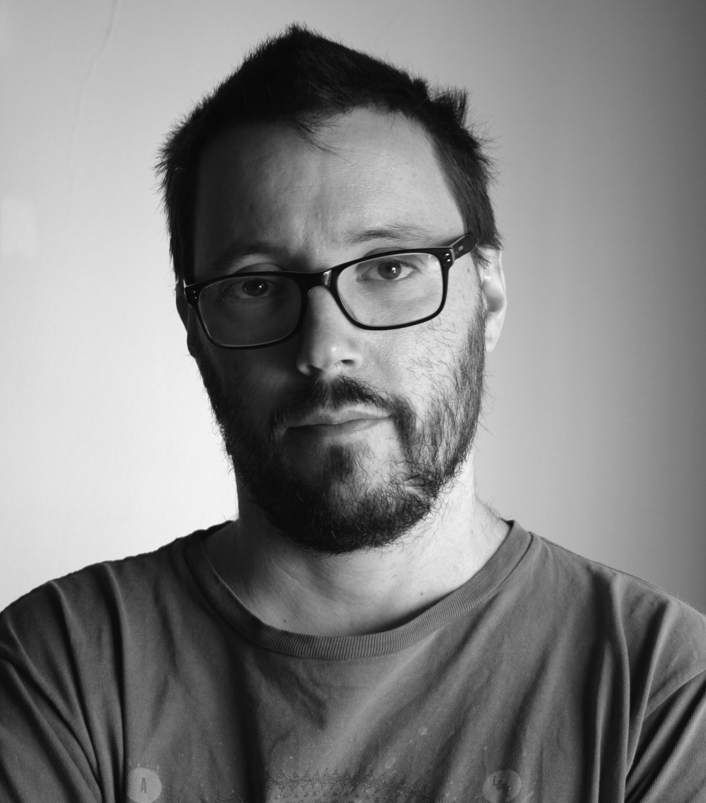

Ignacio Chaneton DF
Reels
DF
Producto
Color
Trabajos
CV

Títulos Académicos
Profesor de Cinematografía y Nuevos Medios
Director de Fotografía.
Idiomas
Inglés
Francés
Experiencia Profesional
Eléctrico
Gaffer
2do. Asistente de Cámara
1er. Asistente de Cámara
1er. Asistente de Cámara
2do. / 1er. Asistente de Cámara
Director de Fotografía
Operador de Cámara
Director de Fotografía y Cámara
Director de Fotografía y Cámara
Guionista y Director
Director de Fotografía y Cámara
Director de Fotografía y Cámara
Asesor en Fotografía
Director de Fotografía y Cámara
Director de Fotografía y Cámara
Director de Fotografía y Cámara. Realización.
Guionista
Director
Director de Fotografía y Cámara.
Director de Fotografía y Cámara.
Director de Fotografía y Cámara.
Guionista
Director de Fotografía y Cámara.
Guionista
Director de Fotografía y Cámara.
Director de Fotografía y Cámara.
Director de Fotografía y Cámara.
Guionista.
Director de Fotografía y Cámara.
Director de Fotografía y Cámara.
Director de Fotografía y Cámara. Co-Director
Director de Fotografía y Cámara. Co-Director
ichaneton@gmail.com